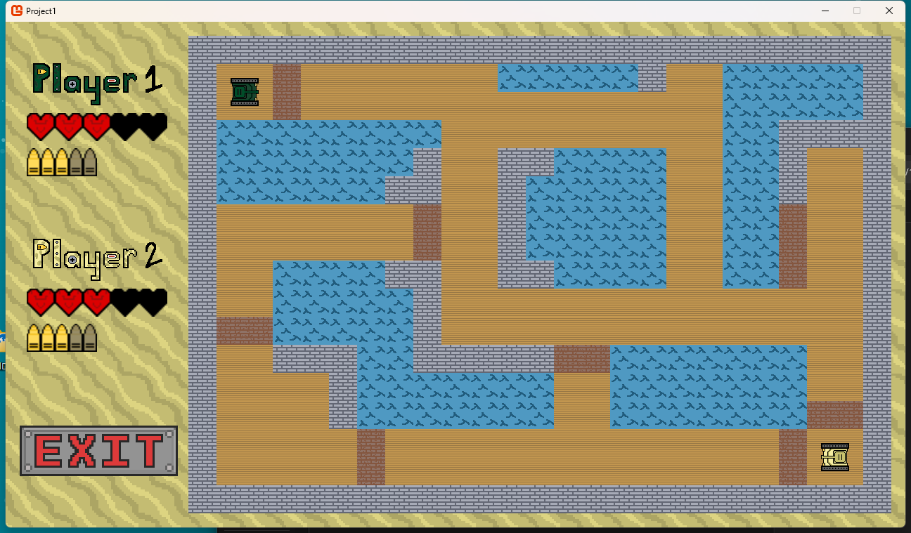
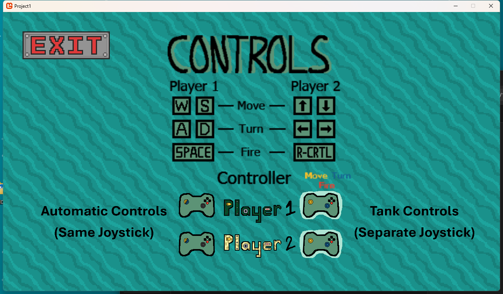
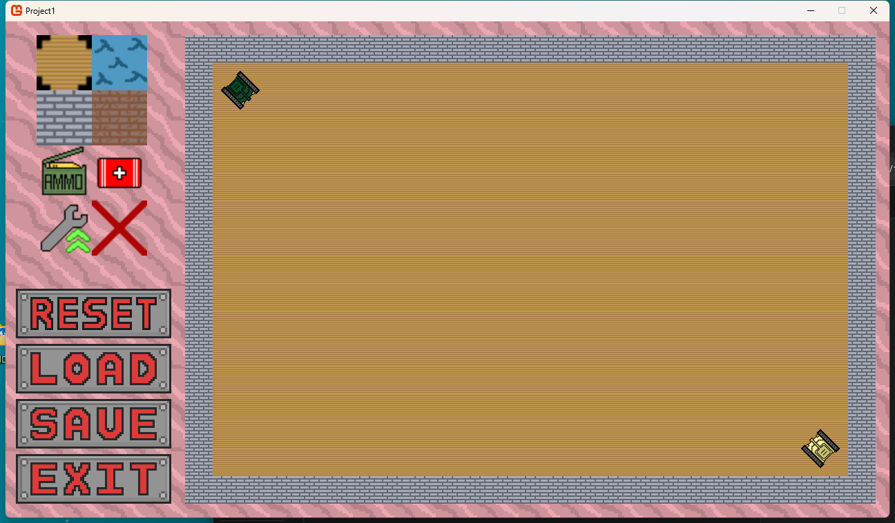
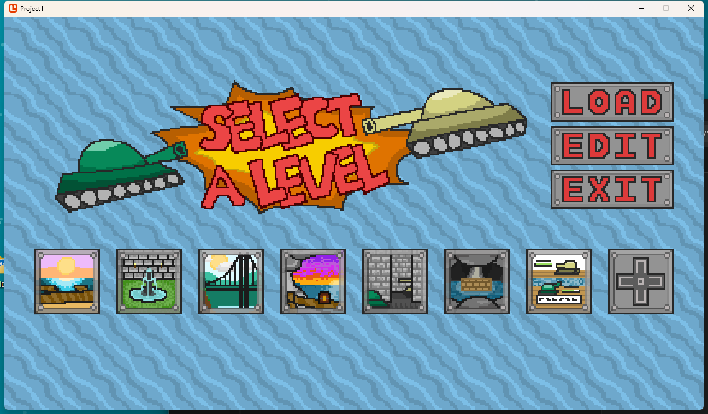

为了同时满足休闲玩家与硬核玩家的需求，我设计并用 C# 实现了两套截然不同的手柄底层输入逻辑：
- 街机模式 (Arcade)： 采用绝对方向映射，左摇杆直接控制坦克移动方向，极大地降低了新手的上手门槛。
- 拟真履带模式 (Simulation)： 深度模拟真实坦克驾驶体验。左摇杆控制左侧履带，右摇杆控制右侧履带。极具机械感的操作逻辑为核心玩家提供了巨大的操作上限与沉浸感。

为了同时满足休闲玩家与硬核玩家的需求，我设计并用 C# 实现了两套截然不同的手柄底层输入逻辑：

开放玩家 UGC（用户生成内容）是我们拓展游戏寿命的核心策略。我为此开发了内置的网格地图编辑器。

除了功能强大的编辑器，游戏本身也内置了数个设计精良的官方关卡。选关界面不仅管理着官方关卡，也充当着读取玩家自定义地图文件的集线器（Hub）。
